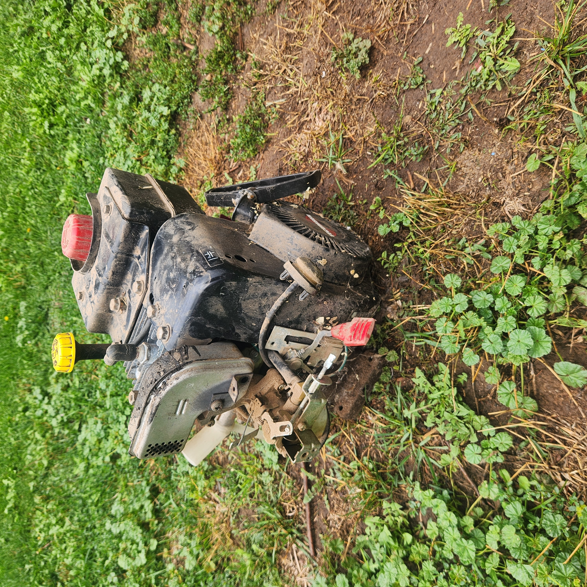

Many of the screenshots in this brief are not from the original project, but from me recreating my design steps from memory for the purposes of this brief.
Engine Rebuild
Having been asked to repair a broken snow-blower, I did some simple testing and realized that the engine wasn't generating as much power as it should have been.
After completely disassembling the snowblower and its engine, it became obvious to me that the governor was a poor design that was sticking in position as it wore down even slightly.
I let the original owner know it was probably not worth it for me to try to repair with my skill level at that time, and they said not to worry about it and that I could keep the parts.
That was a great opportunity for me. As an aerospace engineering student, I had been experimenting with propellers in whatever way I could, but was excited to experiment with the high speed and torque that could come from a gas-powered engine.
I did what I could to help the governor: sanding out scratches and cleaning off gunk, and then began reassembling the engine, cleaning anything I could, replacing grease and gaskets, and anything else I could think of to improve performance.

Design
My first step was to make sure whatever I built fit on the shaft of my newly-rebuilt engine. I took the needed measurements, whipped up a sketch in Fusion 360, added a couple thousandths of tolerance and printed a simple wheel to test the fit.
The next step was building an airfoil to do the work of the propeller. I used NASA's airfoil simulator (below), played with some values to get the drag to lift ratio I wanted, and exported that airfoil's profile as points in a .CSV. Importing those points into Autodesk Inventor and using a Fit Spline gave me a solid sketch to move over to Fusion 360 and add to my shaft connection.

Extruding that sketch 2 times around the shaft and rounding out the edges to avoid unnecessary drag left me with iteration 1 of my propeller design.

Iteration
With the design complete, I printed it with default settings and bolted it on. After starting the engine, and before I could even adjust the choke, the propeller shattered and flung pieces across my yard.
Because of the way the fragments had shattered, I decided my next test would use a less fragile material: TPU. I printed the same design, mounted it and started the engine. This time, the blades did not shatter, but the whole propeller expanded from centrifugal force and slipped off the shaft.
At this point, I realized it wasn't my materials or even really my design at fault, it was my manufacturing. I had printed my design on default settings, which meant thin walls and a hollow interior. There were two specific problems:
- The walls perpendicular to the rotating axis were especially thin. When using TPU, these layers separated, and allowed the walls parallel to the axis of rotation to expand with very little structure behind them.
- The blades of the propeller were hollow, and the surface area connecting the blades to the piece holding onto the shaft was incredibly small. Once it got to speed, the PLA propeller didn't stand a chance.
To fix these issues, I made several small revisions:
- I shrank the central hub around the shaft quite dramatically. It hadn't been a point of failure since its role was just to connect the blades and shaft, and it wasn't worth wasting material on it.
- I increased the number of solid walls on every side of the central hub and changed infill patterns for greater strength.
- I set the area of the blades to have solid infill, and added a small amount of material as a transition from blade to hub.
- I added an extra blade to the propeller for better distribution of load.
With these changes done, I printed versions in both materials and mounted the PLA propeller to test it (below).

This version finally worked! Both the PLA and TPU propellers worked, but my TPU settings still weren't dialed in, so due to a rough print surface and the flex of the propeller blades under their own lift force, I went with the PLA blade. It had higher lift, and after sanding and heat smoothing, was really effective.
I grabbed a couple smoke bombs to have a visual representation of the propeller's power and recorded a video (below).
Lessons Learned
At this point I called the project done. I had optimized my airfoil for more lift, and optimized my design for greater strength. It had been a fun project, and got me involved in the research I started in university: testing lift and drag effects from different airfoil surface textures.
I also learned a great deal:
- I definitely could have repaired that engine initially. It truly might not have been worth it to the customer, but I could almost certainly have found or designed enough parts to make it work properly again.
- I gained experience in working across CAD platforms and using whatever software is available to solve a design problem piece by piece.
- Purposeful destructive testing is not the only time you need proper safety gear! My first test was a close call for endangering my vision, and I made sure to have basic safety measures in place after the fact.